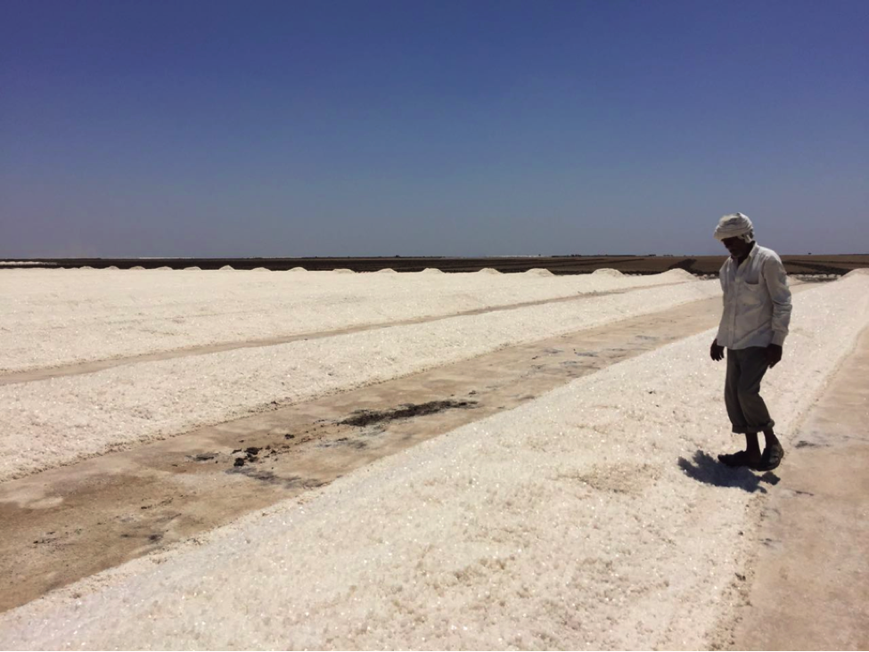
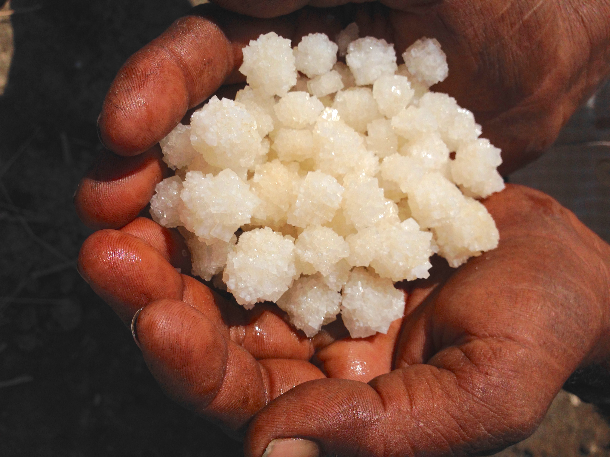
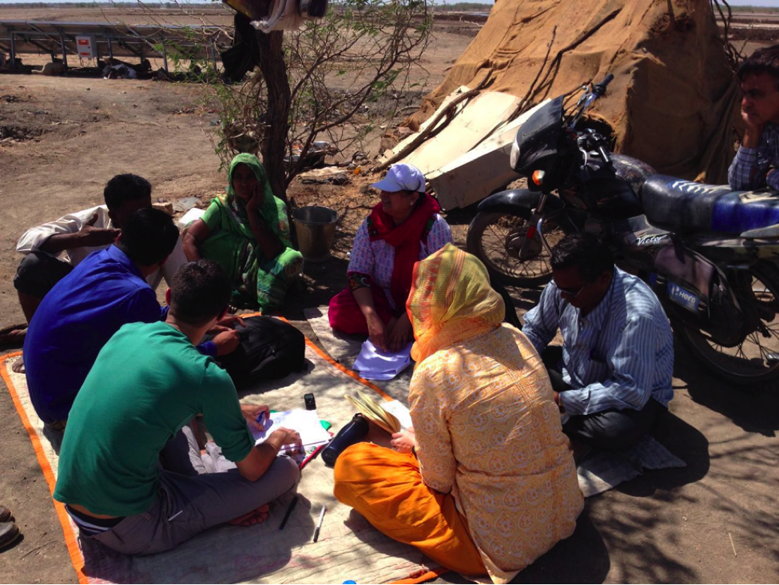
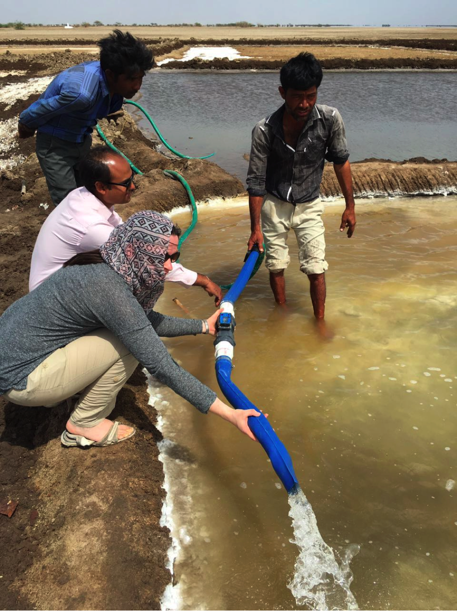
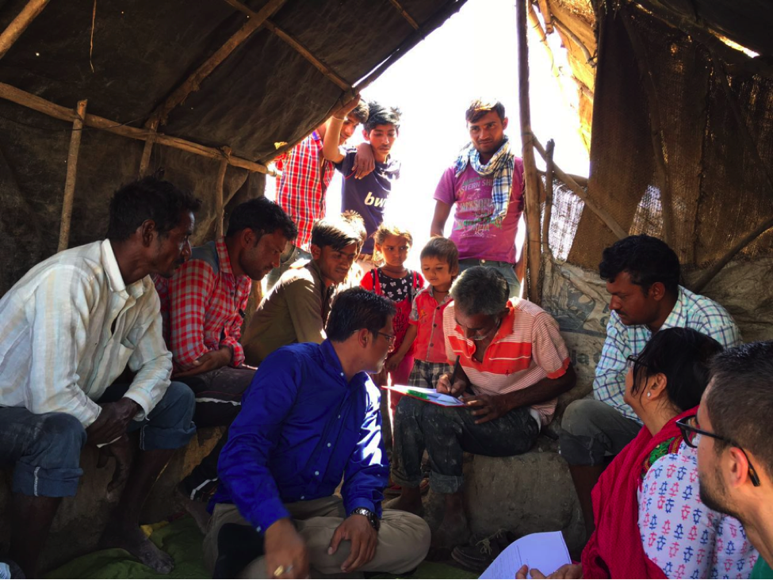
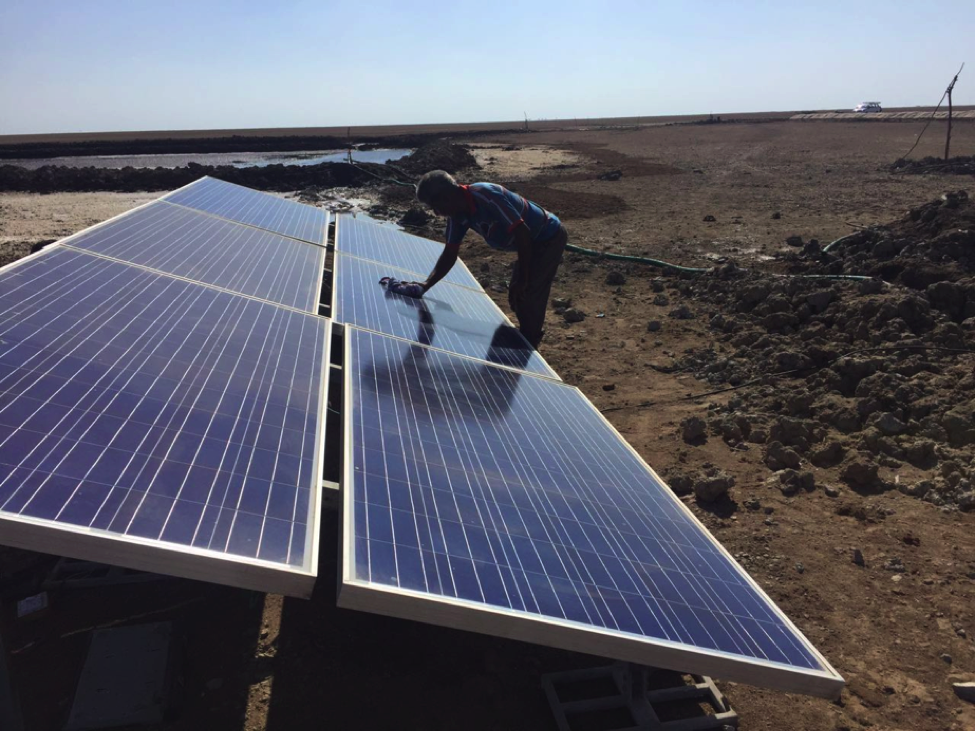
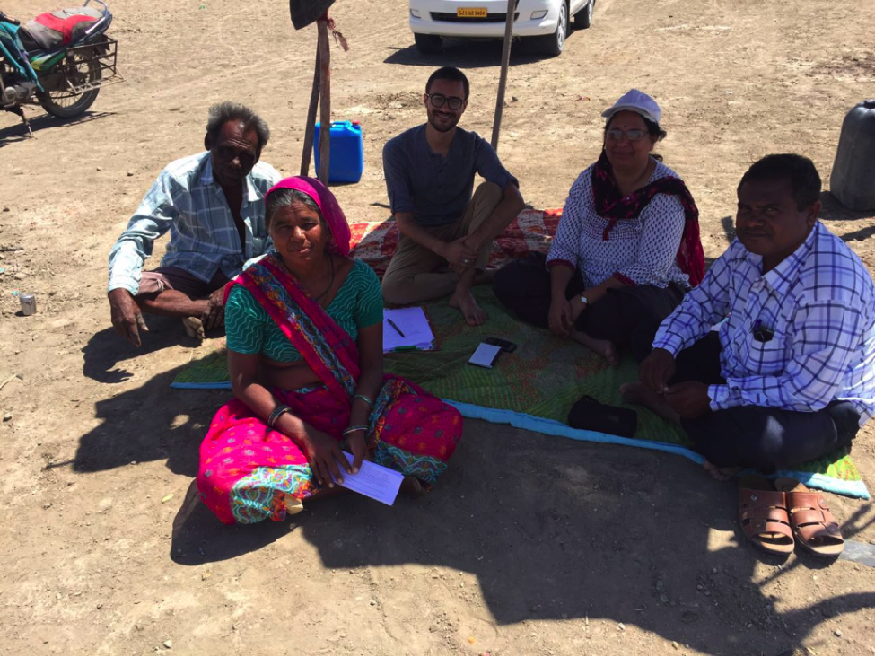
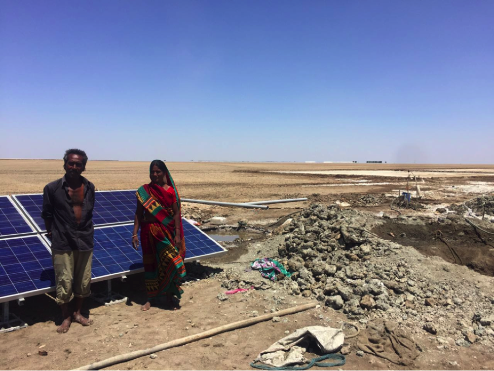
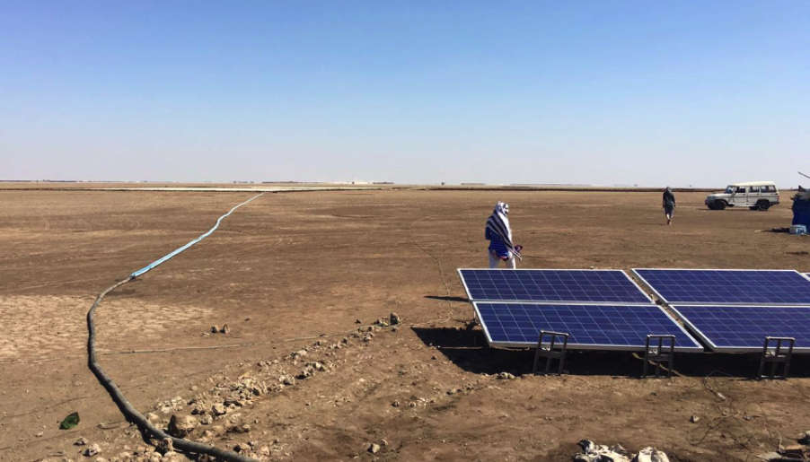

This story was told in collaboration with our partners at the MIT Comprehensive Initiative on Technology Evaluation. To learn more about this project check out the CITE blog.
Water pumping in the Little Rann of Kutch isn’t done for irrigation purposes. The farmers, some 40,000 spread across 5,000 square kilometers (1,930 square miles), pump salty brine from 30-60 feet beneath the surface into large pans where it evaporates and produces crystalized salt. During the monsoon this area is covered by a lake from the rainfall and sea ingress, but the terrain is dry and dusty during the dry months. It is in this barren and desolate landscape, far from the nearest village, that the farmers of the Little Rann produce salt.
 Salt farmer Bhopabhai inspecting his salt pan.
 Salt Farmer Palahadbhai shows us a handful of salt from his pan.
During October and November the families return to the dry lake bed of the Little Rann to begin again the process of setting up their homes and pumping the brine. Until recently the farmers have been using diesel powered pumps, but a new initiative of the Self Employed Women's Association (SEWA) is introducing an appropriate technology solution to the community: Solar Powered Water Pumps!
As part of this years CITE evaluation, a multidisiplinary team from TEL and MIT spent a week learning about the socio-technical ramifications of introducing and using such systems in this context. The first day in the Little Rann of Kutch was spent getting our bearings and piloting the farmer survey and technical measurement techniques. The team from SEWA, our local partner who has been promoting the solar systems amongst the farmers, was incredibly helpful in coordinating and introducing us to the salt farmers.
 The team taking refuge in the shade while piloting the survey.
 Using a flow meter to test how much water is being expelled by the pumps into the salt pans.
 Chendubhai signing the survey consent form with lots of onlookers.
Prior to converting to solar power, the majority of the farmers used diesel engines to power their pumps. Starting these systems required significant upper body strength and the diesel and maintenance costs every season were a financial burden on some families. Now that they have the solar system a significant number of people are reporting just how easy it is to maintain and use the systems.
 Pevjibhai cleaning his solar panels. Most farmers reported that little active maintenance of the system was required. Cleaning the panels was one of the only regular, day-to-day requirements.
 Manjuben: “Solar panels are good technology for women. I can operate it just as well as my husband. Maybe even better!”
Due to the high levels of sunshine and high pumping requirements, solar pumping is an ideal solution for this context. Over the last four years SEWA has been phasing in the solar systems in the area through an installment payment scheme. As the community adjusts to this new technology individuals are innovating and exploring enhancements for their systems.
 Vishrambhai and Hansaben: “ We like our solar system but would like a battery so we can store the power and run the motor for longer, at night after the sun sets. We also saw one family using the panels to power a TV set. That would be nice too!”
 One solar array with the salt pan far into the distance. These are set more parallel with the ground because during a wind storm they were blown off their frame. Luckily, they didn’t break and just needed to be reset.
This story was told in collaboration with our partners at the MIT Comprehensive Initiative on Technology Evaluation. To learn more about this project check out the CITE blog.